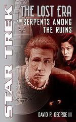

|


Literatura

|
''STAR
TREK - THE LOST ERA: 2311", SERPENTS AMONG THE RUINS
|
 |
|
|
|
Review
por Leandro M. Pinto
|
|
Dois
eventos muito mencionados do Cnone & Cronologia oficial de Jornada
nas Estrelas so os chamados Tratado de Algeron e o Incidente
de Tomed. Mas, embora haja muita falao a respeito destes dois
eventos, poucos detalhes so realmente conhecidos a respeito de
tais eventos. O Tratado de Algeron, primeiro mencionado em "The
Defector" (TNG), o acordo entre a Federao de
Planetas Unidos e o Imprio Romulano, no qual entre supostas
outras clusulas, a Federao abre mo de utilizar tecnologia
de camuflagem, como mencionado no episdio "The Pegasus"
(TNG). J o Incidente de Tomed, primeiro citado em "The
Neutral Zone" (TNG), conhecido como sendo o evento que
serviu de catalisador para o Tratado de Algeron, e o que se sabe
sobre tal incidente apenas que foi alguma coisa que
ocorreu entre a Federao e os Romulanos que custou a vida de
milhares de cidades federados. Isto
o que se sabe no C&C oficial. Deste par de informaes
que parte a premissa bsica do segundo livro da srie Lost
Era de romances baseados em Jornada nas Estrelas, o
volume Star Trek The Lost Era: 2311, Serpent Among the Ruins,
de autoria de David R. George III, e o tema desta nossa
mais nova reviso literria. A idia bsica da srie Lost
Era de trazer contos em perodos da cronologia de Jornada
os quais no foram muito englobados pelo material produzido para
televiso e filmes. Entre eles, o incio do sculo 24, e neste
caso especfico, o ano de 2311, quando ambos os eventos que
inspiraram Serpent Among the Ruins ocorreram. E
para compor a trama em torno destes eventos, David George tambm
fez largo uso de diversos outros elementos da franquia que
ocorreram por volta da mesma poca, apenas algumas dcadas
depois do fim das aventuras cinematogrficas da tripulao da Enterprise
original. Mais notadamente, a tripulao da vez em Serpent
Among the Ruins a da USS Enterprise NCC-1701B,
classe Excelsior, sob comando do Capito John Harriman.
Ele e sua tripulao foram primeiro apresentados ao fandom em Jornada
nas Estrelas: Generations, nos eventos que levaram James Kirk
a se perder na anomalia conhecida como Nexus. Em 2311, Harriman
est a dezoito anos em comando desta Enterprise, e pelo
livro podemos acompanhar como este tempo ter moldado ele e sua
tripulao, muitos ainda originais de quando esta unidade da
classe Excelsior foi primeiro lanada, como Demora Sulu.
Alm disto, tambm teremos diversos outros elementos jogados na
fogueira que se forma a frente, como eventos que ocorreram com os
Klingons durante Jornada nas Estrelas VI: A Terra Desconhecida. Iniciando um estilo novo de reviso literria para o Trek Brasilis, vamos primeiro passar por um sumrio comentado da trama de Serpent Among the Ruins, captulo a captulo, para depois termos uma anlise geral sobre o conto e seus elementos. Nesta primeira parte, portanto, h as informaes que se classifica como "spoilers" sobre detalhes do livro. Prologue:
Countdown
O
conto abre em um estilo bastante jornadeiro, com a tripulao da
Enterprise separada em dois grupos avanados misturados a
populao de um planeta em sociedade pr-dobra, os Koltaari.
Contudo, o Capito Harriman, liderando um dos grupos avanados,
rapidamente se depara com uma situao extremamente crtica:
fortes exploses ocorrem em algumas instalaes industriais da
capital do planeta, e no espao areo desta, nada menos do que
uma nave Romulana da classe Ivarix surge. Harriman procura
contatar seus tripulantes no planeta e sua nave, mas sem sucesso:
campos de interferncia foram acionados pelos Romulanos para
prevenir este movimento, uma vez que eles tambm sabem da presena
federada no local. Desta forma, Harriman no tem como saber que o
grupo liderado por Demora Sulu se encontrava no ponto zero de
algumas das exploses, com ela liderando este pessoal para lugar
seguro. No
que ele tambm estivesse sem seus prprios problemas. To logo
conseguem sair de dentro do envelope do campo de interferncia,
um grupamento de oficiais Romulanos se teleporta a sua volta e os
rende, sendo seguido pelo comandante da Fora-Tarefa Romulana no
local, o Almirante Vokat. Velho conhecido de Harriman, como a
narrativa nos demonstra, Vokat quer usar esta oportunidade no
para colocar os federados sob custdia, mas sim para os informar
que eles devem se retirar do local, pronto. Harriman se nega a
fazer isto, e classifica a presena Romulana ali como um ato
beliscoso desnecessrio e uma invaso ilegal de territrio
neutro. Vokat apenas responde que lhes est no direito, e que
aquele territrio clamado pelo Imprio. Sem poder forar o
tema muito mais, Harriman retorna desgostoso para a Enterprise,
e depois de avaliar a situao com sua Primeira-Oficial, ordena
o retorno da nave para uma Base Estelar federada nas proximidades. O Prlogo foi bastante utilizado para j colocar em situao beligerante as foras tanto do Imprio Romulano quanto da Federao, e tambm foi onde fomos apresentados a diversos dos tripulantes principais de Harriman, como a sua XO, a agora Comandante Demora Sulu. Enquanto deliberava com Harriman sobre o que fazer, ela no se fez de rogada em advogar por intervir de alguma maneira contra a FT Romulana, seno por confronto direto, por alguma outra maneira. Harriman no invoca realmente a Primeira Diretriz diretamente, mas tambm no precisa: segundo a avaliao de Harriman, se uma interveno federada ocorresse por iniciativa deles imediatamente, o conflito iria imediatamente escalar para hostilidade aberta, o que no ajudaria em nada a Federao e nem o povo de Koltaari. Minus Ten:
Foxtrot Um
captulo leve o que tivemos aqui, embora isto no significou
falta de novas informaes a respeito da trama. Tivemos muito
disto, com duas seqncias bsicas. Primeiro, podemos
acompanhar Harriman e seu engenheiro-chefe, Tenente-Comandante
Buonarroli, coordenarem as operaes de desembarque e descarga
de tripulantes e material para Foxtrot XIII, um dos postos-avanados
da Federao ao longo da Zona Neutra Romulana. Outra nave da
Federao, a USS Agamemnon, tambm participa das operaes.
Tambm aprendemos que j se passaram sete meses desde a
investida Romulana em Koltaari, e desde ento a crise tem sido
uma presena constante nas operaes da Frota Estelar ao longo
da Zona Neutra, com a Federao, os Romulanos e os Klingons cada
vez mais aumentando a j grande tenso geopoltica desta regio
do espao. Mas
para Harriman, tambm havia um aspecto muito pessoal para si
sobre a visita da Enterprise a Foxtrot XIII, pois a
comandante do destacamento local do posto-avanado era nada menos
do que sua namorada, uma humana descendente de africanos da Costa
do Marfim, Comandante Sasine. Finda as operaes de resuprimento
de Foxtrot XIII, Harriman tem a oportunidade de ter um encontro
romntico com Sasine, coisa que ele no havia tido chance de
fazer h coisa de quase um ano, durante suas frias apenas
encontros formais pela Frota Estelar foi tudo o que ele conseguiu
com ela nos ltimos onze meses, mesmo com a Enterprise designada
para patrulhar exatamente aquela rea do setor Foxtrot do espao
federado perto das fronteiras. Harriman tambm se lembra da operao
que precedeu as suas frias com Sasina, uma difcil operao
em Devon II, dentro da Zona Neutra. Mas no seria apenas uma
agradvel noite que ambos teriam juntos. Sasine tambm estava
terminando seu turno de servio em Foxtrot XIII, e seria uma das
oficiais da Frota a ser transportada pela Enterprise para a
Estao Espacial KR-3, para remanejamento para outra misso. Dois pequenos detalhes que me agradaram: Buonarroli mencionado como sendo um talo-alfacentauriano, ou seja, um humano nascido em um outro mundo da Federao, mas o qual mantm tradies de seus antepassados italianos um timo aspecto de diversidade que sempre me agrada. E fora isto, tivemos meno a Harriman ter passado suas frias em outro local que no Risa, o que ajuda a quebrar a mesmice de sempre ser Risa a ser mencionado como local para frias. Fora isto, parece que podemos tambm ver um padro, aqui... pelo que Harriman citou, ele e Sulu participaram com alguns outros oficiais da Frota de uma operao especial dentro da Zona Neutra. Isto imediatamente me fez lembrar dos eventos que Picard passou no episdio "Chain of Command", de TNG, e me pareceu que isto at mesmo estabelece precedentes que indicam a extremamente questionvel poltica da Frota Estelar de usar Capites de naves estelares em operaes que claramente pedem pelo envio de foras especiais dedicadas a tarefa...! Minus
Nine: Algeron Neste ponto, j
temos movimentaes em escala mais ampla sobre a crise. Em uma
estao espacial na regio de Algeron, em espao Romulano, est
havendo as sesses de negociaes diplomticas entre a Federao,
os Romulanos e os Klingons, e as quais esto se arrastando h
meses. Da mesma forma que diversas outras sesses por este perodo,
acompanhamos mais uma destas acabar em um recesso inconclusivo,
depois de mais uma demonstrao exasperada Klingon contra uma
proposta Romulana, que pedia por inspees regulares de instalaes
militares. Tal
demanda, como explicou a Embaixadora Romulana Kamemom, seria com o
intuito de fiscalizar a proposta Romulana de banimento de criao
daquilo que ela chamou de "metaarmas", ou armas de
disrupo do subespao em outras palavras, armas de destruio
em massa. Kamemom cita que bem ali, onde outrora existia um
planeta romulano, Algeron III, foi o local onde anos antes uma
arma destas teria sido detonada por Klingons durante uma batalha
contra naves Romulanas; um dos efeitos colaterais da reao da
arma teria provocado uma ruptura baseada no velho "tecnobable"
de Jornada a qual destruiu o planeta. Os Klingons tambm
negam a autoria de tal ataque, e embora todos ali concordaram que
o uso de tais armas seria de fato inaceitvel, ningum realmente
chegou a um consenso em como poderia ser possvel se implantar
tal proibio. O interessante de ter acompanhado neste captulo foi particularmente interao Romulana-Klingon, com a Embaixadora Kamemom fazendo especulaes sobre a interao que os representantes Klingons demonstravam ter entre si. A Romulana ponderou para si mesma que diversas faces Klingons deviam estar querendo impor suas prprias agendas de intenes nas negociaes, incluindo a a posio oficial do Alto Conselho Klingon, liderado pela Chanceler Atzebur, uma alumni de Jornada nas Estrelas VI: A Terra Desconhecida com isto, temos a informao que Atzebur ainda est no controle do Imprio a mais de duas dcadas. Alm disto, a romulana tambm ordenou diversos de seus adidos a providenciarem uma investigao sobre se a Federao estaria desenvolvendo metaarmas, pois ela tem fontes confiveis, ainda que extra-oficiais, que tal programa poderia estar sendo feito pela Frota Estelar. E enquanto isto tudo, tambm acompanhamos o General Kage e seu lugar-tenente Ditagh, representantes Klingons, discutirem em privado, com Kage tendo que impor a seu assistente que este fique na linha e no se permita a questionar os mtodos e posies dele, experiente diplomata Klingon. Ditagh acredita que Kage contido demais, mas Kage ressalta a importncia da posio Klingon no momento deve ser usada com diplomacia. Segundo Kage, embora as foras de defesa Klingon no estejam na sua melhor forma, elas ainda seriam um perfeito fiel da balana em uma eventual guerra Federao vs. Romulanos, como ele parece acreditar que iminente. Portanto, os Klingons tem nisto uma boa massa de manobra para os ajudar nas negociaes. Minus
8: Universe Aps
se despedir de Sasine, Harriman e a Enterprise partem para
a operao a qual foram designados desta vez. Tanto a Enterprise
como duas outras naves, a Canaveral e a Ad Astra,
iriam servir de escolta para os testes de campo finais de uma
experimental nave da frota, a USS Universe, NX-2999. A Universe
no era apenas a detentora de diversas novas tecnologias
corriqueiras, mas duas outras de grande importncia. Primeiro,
mais um sistema de dobra espacial experimental, chamado de
hiperdobra, um programa da Frota intencionado repor o fracassado
experimento de transdobra de vrios anos antes. E alm disto, a Universe
tambm conta com seu prprio sistema de camuflagem, baseado em
tecnologia romulana. No
caminho para esta sua prxima misso, o Capito da Enterprise
pondera a respeito de como ser trabalhar de perto com um
Almirante da Frota Estelar em particular, no caso, o Almirante
John Harriman, seu pai. Harriman se lembra de sua infncia pelas
naves estelares nas quais seu pai serviu ao longo de sua carreira
na Frota ele nasceu dentro de uma, nada menos e depois,
como ele mesmo iniciou sua prpria carreira na Frota Estelar.
Contudo, um incidente cerca de um ano aps ele assumir a cadeira
de comando da Enterprise fez com que pai e filho ficassem
de relaes rompidas, e aps todos estes anos, ambos mal se
falaram, apenas em ocasies oficiais, como esta misso viria a
ser. Todos
os preparos feitos, a Universe ativa sua hiperdobra
enquanto as outras trs naves monitoram os progressos. Mas,
momentos aps a Universe atingir hiperdobra um, uma falha
no sistema literalmente mandam a nave kaboom. A fora da exploso
gerou uma onda de choque concentrada que parte para engolfar a Ad
Astra, e a Enterprise rapidamente procura restabelecer
contato enquanto parte para o resgate. Mas desconhecido a todos
ali, no apenas estas naves estavam monitorando as atividades da
Frota e a exploso seguinte. Oculto por camuflagem, o Almirante
romulano Vokat e sua tripulao detectam a detonao, e
especulam sobre sua natureza. Forte demais para ser um mero
sistema de dobra em colapso, embora a telemetria mostrasse tal
tendncia. Vokat assume que foi a detonao de teste de algum
dispositivo metaarma, e desta forma, ordena o retorno para Romulus
de modo a reportar tais descobertas. Assim, Vokat se retira do
local com a sua nave, a capitnia romulana Tomed. Harriman
foi de fato o personagem central da passagem, e tivemos bastante
info de background sobre o Capito da Enterprise, como
este cresceu e entrou para a Frota, e sua relao com o pai. Minus
7: Aftermatch As
primeiras ondas de choque pessoais e polticas devido aos eventos
ocorridos com a Universe tomam forma neste captulo. Em KR-3,
Harriman acompanha por algum tempo sua oficial mdica-chefe, Dra.
Morel, continuar os tratamentos do Almirante Harriman, seriamente
ferido quando a Ad Astra foi atingida pela fora da exploso,
embora ele foi um dos poucos feridos naquela nave. Aps isto,
Harriman conversa de maneira mais pessoal com sua XO, Demora Sulu,
sobre a sua relao com seu pai e sobre como se sente no momento
ele confessa no gostar de seu pai, mas sinceramente gostaria
de gostar dele. Sulu responde que j passou por situao
semelhante, quando aps a morte de sua me, foi morar com Hikaru
Sulu. Ela no gostava das ausncias dele e da distncia, mas
com o tempo aprendeu a ver o melhor em seu pai e a am-lo. Longe
dali, outras deliberaes tambm estavam ocorrendo, no Alto
Conselho Klingon. Um adido Romulano reportou diretamente para o
Alto Conselho as descobertas a respeito daquilo que eles acreditam
ser um programa de armas de destruio em massa da Federao,
e disto, a Chanceler Atzebur e os membros do Alto Conselho comeam
uma acalorada discusso. Diversos deles consideram que a Federao
planeja substituir suas atitudes em relao aos Klingons,
passando de ajuda para ataque. Atzebur e alguns outros afirma que
no vem sentido nisto, e no querem cair em concluses
precipitadas. Contudo, frente a evidncias atuais, Atzebur
garante ao Alto Conselho que ir pressionar na matria, e que
certamente ir fazer tudo o possvel para garantir a sobrevivncia
do Imprio, quer isto signifique problemas com quem quer que
seja. Tivemos bom momento com outro rosto conhecido do fandom, a Chanceler Atzebur, com ela ponderando para si mesma diversos aspectos de seus 18 anos de liderana do Imprio, e os desafios que enfrentou neste perodo, internos e externos, pessoais e gerais. Tivemos tambm mais alguma coisa com Sulu e diversas referncias ao ex-navegador da Enterprise original, e Capito da Excelsior. Houve tambm uma meno a betazides fazerem parte da Federao j nesta poca, o que sugere que o Primeiro Contato com eles deve ter ocorrido pelo menos em algum momento do sculo anterior, portanto. Minus
6: Smoke Diversos pontos
acontecendo simultaneamente. Aps o Almirante Harriman recuperar
alguma conscincia, ele balbucia algumas fracas palavras enquanto
conversava com um outro Almirante, amigo seu de longa data.
"Funcionou", e "Os Romulanos...". O Almirante
Mentir fica intrigado por isto, mas no consegue saber mais
detalhes do ainda fraco Harriman. Entrementes, o General Kage
pressiona fortemente os representantes federados em Algeron,
praticamente esfregando um PADD na cara do Embaixador Endara e
exigindo uma explicao da razo de a Federao estar
desenvolvendo metaarmas. Endara fica na defensiva, e nega
firmemente as acusaes, enquanto a Embaixadora Kamemom assume
uma posio de ceticismo mas no de pleno apoio a Federao. Harriman
recebe a bordo da Enterprise dois operativos da Federao,
Drysi Gravenor e Elias Vaughn, que repassam a situao com o
Capito da Enterprise. Enquanto falam, o Conselho da
Federao j se prepara para fazer declaraes pblicas a
respeito da crise, uma vez que informaes vagas e desconexas j
estavam ao largo, de qualquer forma. A explicao consistiria em
esclarecer que os testes da Universe resultaram em uma
exploso a qual foi erroneamente interpretada por uma nave
romulana como sendo de testes de uma arma. Aps o briefing com os
operativos, Harriman informa Sulu de que a misso deles no
momento consiste em levar Gravenor e Vaughn at Algeron, onde
eles entregariam as especificaes de hiperdobra para os
Romulanos e para os Klingons. No surpreendentemente, Sulu quase
pula no teto ao saber de uma deciso deste quilate, e do que
representa. Harriman alega que a inteno da Federao
demonstrar boa vontade para com as outras potncias, e procurar
evitar o conflito, e que pela complexidade dos sistemas de
hiperdobra, eles no conseguiro fazer uso prtico das informaes,
de qualquer modo. Sulu no acredita nisto, e insiste que uma
sandice destas enquanto uma escalada para guerra se inicia no
a melhor sada. Mas de uma maneira ou de outra, a Enterprise
parte para Algeron. Detalhe interessante foi estabelecer o Almirante Tirasol Mentir (um nome que soa ruim em Portugus, concordo) como membro de uma espcie aqutica, a ponto de ele utilizar uma roupa de EVA ao estilo "mergulhador ao contrrio", pois a roupa dele o mantinha um ambiente aqutico. Bom para termos mais diversidade alien fora da mesmice do humanide-testa-gozada. J no momento que Harriman conversava com os operativos federados, diversas vezes se mencionou o "Conselho da Federao" e o "Presidente da Federao", mas sempre por estes ttulos em nenhum momento nomes foram mencionados; isto acontecia apenas para Almirantes. Mais uma vez, aqui est tendncia dos autores de Jornada de retratarem o governo civil federado como uma entidade sem rosto e indefinida. Sim, importante manter a urea das Instituies, mas o exagero desta tendncia faz com que o governo federado parea como algo distante e irrelevante nas tramas, sejam em pginas, sejam em telas de TV ou cinema. Minus
5: History Um
captulo em flashback, relatando os eventos do primeiro encontro
entre Harriman e Vokat. Na ocasio, Harriman ainda era um jovem
tenente no leme da Huntley, uma nave da Federao que
acabou tendo que engajar uma nave romulana, quando a Huntley
respondeu ao pedido de socorro de uma outra nave sofrendo ataque
romulano, a Dakota, um pequeno cargueiro. O j Almirante
Vokat atacou ambas as naves federadas considerando que elas se
encontravam violando espao romulano; o fato de aquela rea em
particular ter sido anexada pelo Imprio h pouqussimo tempo e
ainda sem o conhecimento da Federao no pareciam importar
para Vokat. Encontramos
a Huntley em situao difcil. A nave foi sobrepujada
pelo ataque romulano, e Harriman um dos poucos sobreviventes de
uma ruptura no casco da nave que matou praticamente todos os
ocupantes da ponte de comando. A Huntley e a Dakota
se encontram a deriva, e Vokat se prepara para despachar times de
abordagem para a captura da nave federada, algo que sem dvida ir
ter grande reconhecimento para ele como uma presa ganha em
combate. Contudo, Harriman, agora no comando, organiza com alguns
engenheiros uma manobra para poderem se valer de os Romulanos
abaixarem a guarda para transportar times para a Huntley.
Harriman consegue uma maneira de habilmente se teleportar e a
alguns outros para a ponte da nave romulana, onde rende Vokat e os
demais oficiais dele. Com a mesa virada, Harriman se assegura que
seus tripulantes consigam deixar a Huntley em condies
de vo para retornarem para a Federao com os sobreviventes de
ambas as naves federadas. Vokat chega a exigir que Harriman o
mate, para assim escapar da humilhao de ter deixado uma vitria
lhe escapar pelos dedos, mas no tem muita sorte: Harriman apenas
o tonteia, e a prxima coisa que Vokat se lembra de constatar
que acabou se tornando prisioneiro romulano prestes a enfrentar
uma corte-marcial com a sua patente j rebaixada para Subtenente. O captulo claramente procura colocar em contexto uma rivalidade de longa data entre Harriman e Vokat, com este tendo cado em desgraa devido s aes do ento jovem tenente. No fica estabelecido quando teria sido o confronto, mas considerando as datas e postos dos personagens, deve ter ocorrido durante alguma poca entre os primeiro filmes para cinema da Srie Original. Minus
4: Cloak
Aps
serem escoltados pela Tomed at Algeron, Harriman e os operativos
da Frota fazem exatamente aquilo que haviam sido ordenados a
fazerem: entregam os dados sobre a hiperdobra para as delegaes
Klingon e Romulana em Algeron. Os diplomatas ali reagem com
diferentes nveis de ceticismo em relao aos dados, mas todos
confirmam que vo os analisar, da mesma maneira que o Almirante
Vokat tambm deseja fazer suas prprias anlises, sem a objeo
da Embaixadora romulana. As
horas que ainda iriam ser usadas para as partes fazerem seus
estudos deram ento a Harriman a chance de prosseguir com outra
de suas intenes em Algeron. Ele contata a Embaixadora Kamemom,
a qual j conhecia de diversas outras ocasies diplomticas
antes. Harriman confidencia para Kamemom que os dados fornecidos
pela Federao iro sem dvida mostrar que os testes no eram
de armas, mas sim de sistemas de propulso; mas que isto talvez no
seja o bastante para evitar o conflito que est surgindo daquela
crise. Vokat, ele afirma, ir fazer de tudo para ter o conflito
que deseja, e Harriman deseja a ajuda dela para impedirem qualquer
ao de Vokat. Algo
fundamental a esta parte da trama foi estabelecer tanto para
Kamemom quanto para Harriman que um podem confiar no outro, seno
Harriman no poderia ter de maneira segura a iniciativa de
procurar uma oficial Romulana em um plano para impedirem quaisquer
aes por parte do Almirante Vokat. Isto conseguido, com a
interao entre o Capito da Enterprise e a diplomata
romulana. Minus 3:
Shadows No
que a Enterprise parte para retornar para o espao da
Federao, escoltada pela Tomed, a nave est sendo
conduzida por Demora Sulu. Harriman transferiu temporariamente o
comando da Enterprise para sua XO, e a ordenou levar a nave
para a posio de patrulha ao longo da Zona Neutra para a qual o
Comando da Frota a designou. Contudo, logo aps a Enterprise
deixar Algeron, Sulu e a tripulao detectaram uma falha no
motor de impulso da Enterprise que, seno for contida,
poder resultar em exploso. A Tomed detecta em seus
sensores a dificuldade, e a Subcomandante Linavil especula
maneiras de ajudar a nave federada. No se pode deixar de pensar se tal falha foi deliberadamente provocada no por Romulanos, mas sim por ningum menos que Harriman o incio do captulo mostra ele em um tubo jefferies modificando exatamente os sistemas de impulso de sua nave. Entrementes, a Embaixadora Kamemom segue para uma seo especfica da estao para colocar em prtica as instrues que Harriman a passou, e furtivamente opera uma srie de consoles. Momentos depois, a tripulao da Enterprise consegue isolar o problema em seu sistema de propulso e informam um ctico Vokat, na Tomed, que eles esto prontos para retomarem viagem para a Federao, e desta forma, o Almirante Romulano no pressiona o assunto. Mas no sem antes ns aprendermos que Harriman, Gravenor e Vaughn agora tambm se encontram a bordo da Tomed, que depois de algum tempo escoltando a Enterprise, aciona curso para Romulus. Aparentemente, o que se pode concluir da seqncia de eventos aqui neste captulo que Harriman arranjou um meio para que a Tomed abaixasse a guarda de modo a permitir Kamemom seguir as instrues de como e onde os teleportar para dentro da Tomed. Minus
2: Singularity
Movimentaes
em altas cpulas acontecem neste captulo, com o Almirante
Mentir assumindo as funes do ainda inabilitado Almirante
Harriman. Enquanto retorna para a Federao, Sulu esbarra com vrias
discrepncias em registros de pessoal da Frota Estelar,
encontrando referncias a tripulantes designados para a Universe
e para a Agamemnom, mas os quais haviam morrido em uma
operao secreta um ano antes ela prpria havia
estado na operao, e pode constatar isto. Mentir ordena para
ela trazer a Enterprise para KR-3 e reportar para ele.
Assim que se encontram, Sulu reporta o que encontrou, e que
desconfia que haja um espio romulano na Enterprise, pois
isto explicaria algumas interferncias que tem detectado vez e
outra no disco defletor, o que poderiam ser transmisses
escondidas. Mentir confirma para ela que de fato h um espio
romulano a bordo, Alferes Travis, mas que Harriman j havia
descoberto isto to logo Travis havia entrado para a tripulao.
A Frota Estelar optou por o vigiar com cautela para atividades de
contra-espionagem, ao invs de apenas o prender. Contudo, Mentir
confirmou a ela que a utilidade de Travis chegara ao fim, e que
agora seria preso. Depois disto, ordenou a ela levar a Enterprise
para Foxtrot XIII, e aguardar no local. Enquanto isto, Atzebur alertada por um dos comandantes regionais Klingon, General Kaarg, que h uma conspirao de um outro general, Gorak, para a eliminar, e que o lugar-tenente de seu enviado a Algeron est envolvido na operao. Atzebur pede a este seu comandante que destaque tropas leais para a escoltarem, e que investigue mais a matria. Na Tomed, dois eventos em particular tm incio. Primeiro, os sistemas de comunicao da nave so desativados, ao mesmo tempo em que um alerta geral soa pela nave toda, indicando que iminente o colapso do sistema de conteno da singularidade quntica do motor da nave. Vokat inicializa os procedimentos de contingncia para tal eventualidade, ao mesmo tempo em que assume certeza de ser uma sabotagem federada, dado o timing dos eventos. A tripulao da Tomed vai para os pods de fuga, e a nave colocada em rota para uma regio do espao onde sua destruio no ir afetar nada ao redor. Minus 1:
Serpents Para
continuarem com o plano, Harriman e os dois operativos, ainda a
bordo da condenada Tomed, trabalham furiosamente para
reajustarem a nave em um curso em direo ao espao da Federao,
ao invs do curso original de emergncia que a tripulao
havia engajado. E estes procedimentos so largamente dificultados
pelo fato de que Vokat, seu oficial de cincias e outros quatro
tripulantes permanecem a bordo, para encontrar os intrusos os
quais Vokat agora tem certeza de estarem ali. A caada pela nave
intercala os seis romulanos procurando os trs federados enquanto
estes se asseguram que a Tomed ir automaticamente para
onde desejam que ela v. Diversas lutas corpo-a-corpo ocorrem
pela nave, at que finalmente Harriman e seus operativos se
asseguram que a operao ser um sucesso, e que Vokat fosse
feito prisioneiro por eles. Tarefa pronta, Harriman e todos os
outros deixam a Tomed. E a insurtida da Tomed no
setor Foxtrot monitorada pela Enterprise, de sua posio
no setor Echo, que assiste a longa-distncia a Agamenon
engajar a nave intrusa, a atacando enquanto esta se dirige para
Foxtrot XIII. Mas a Enterprise nada pode fazer quando a Tomed
finalmente alcana Foxtrot XIII. O captulo sem dvida o mais longo, embora a sua seqncia de eventos se d em um perodo curto na trama, estando apenas entre algumas horas depois da primeira falha na Tomed forar a mudana de rota at que a nave finalmente alcanou o espao da Federao. Mas suas conseqncias sero fundamentais para o desfecho da trama, isto sem dvida alguma. Zero: Tomed No havia mais nada que pudesse ser feito. O campo de conteno da singularidade quntica da Tomed entra em colapso, resultando em uma massiva exploso subsespacial que engloba a USS Agamenon, e os treze postos avanados do setor Foxtrot do territrio da Federao ao longo da Zona Neutra. A destruio total. Plus One:
Ruins Rapidamente
encontrando Harriman e os dois operativos na sala de transporte da
Enterprise para acompanharem o momento final do plano a
destruio do setor Foxtrot Sulu a este momento j estava a
par da inteno geral do plano preparado pela Frota Estelar, que
se iniciou com o uso do espio romulano na Enterprise para
que este providenciasse uma presena romulana nos
"testes" da Universe e sua subseqente destruio,
algo que havia sido intencionado desde o incio. Assim, a cadeia
de eventos que levou a tambm destruio dos vazios postos avanados
no setor Foxtrot teve incio, Uma
transmisso feita pela Enterprise, em freqncias
federadas, romulanas e klingons, informando a todos na rea que
um ataque injustificado por parte dos Romulanos destruiu os postos
avanados no setor Foxtrot juntamente com uma nave federada.
Rapidamente, uma concentrao de naves federadas se formou ao
longo da Zona Neutra, em resposta ao ataque ao setor Foxtrot, e
naves Romulanas e Klingons tambm iniciaram seus posicionamentos
na fronteira. Capites federados e klingons contatam a Enterprise
para coordenarem seus esforos em um eventual, at mesmo
iminente, confrontao, e naves Klingons cerram formao com
naves federadas. Frente a isto, os comandantes Romulanos piscaram
e ordenaram a retirada das foras extras ao longo da fronteira. De
volta a Algeron, Harriman pode discretamente retomar o local de
onde supostamente no poderia ter sado, e as discusses
prosseguem agora a luz destes novos eventos no setor Foxtrot. E
para convenincia da Federao, a Embaixadora Kamemom no
tinha real noo do que fora o plano federado. No seu ver, ela
ajudara Harriman para que este tentasse impedir o ataque de Vokat,
mas que Harriman no teria tido sucesso. E os Romulanos tem que
se contentarem com o fato de que pelo menos, a Federao optou
por no contra-atacar quando claramente esta seria uma opo
legtima para ela realizar. E
aps a Enterprise retornar para a estao KR-3, Harriman
recebe a notcia da morte de seu pai, que no suportou os
ferimentos. Ironicamente, ele ento se tornou a nica vtima
fatal do plano que ele mesmo ajudou a conceber, desde a
"exploso" da Universe at a detonao da Tomed
no setor Foxtrot. Epilogue:
Designs Os arcos se
fecham no eplogo. O primeiro deles se refere a como no frigir
dos ovos, tanto Gorak e a Chanceler Atzebur so sobrepujados por
uma vendetta providenciada pelo prprio General Kaarg; Ditagh
aproveita um encontro entre Gorak e Atzebur, e ataca ambos,
criando assim uma histria na qual ele matou Gorak aps este
supostamente ter atacado a Chanceler do Imprio Klingon. Com
ambos fora do preo, Kaarg tem caminho livre para se tornar o prximo
Chanceler do Imprio. Dois
meses depois do Incidente de Tomed, o Tratado de Algeron
finalmente concludo, mas quando da apresentao final do
tratado, a Embaixadora Kamemom declara que os Romulanos no iro
assinar o tratado. Aps o choque inicial das delegaes,
Kamemom apresenta uma verso simplificada do mesmo Tratado, o
qual ela diz que o que o Preator e o Senado romulano assinaram.
Nele, nas palavras da prpria Embaixadora, A atual Zona Neutra
estabelecida entre o Imprio Romulano e o Imprio Klingon
reafirmada, e qualquer violao desta Zona Neutra ser encarada
como um ato de guerra. Uma reafirmao idntica para com nossas
fronteiras com a Federao tambm ocorre. Finalmente, a Federao
ir aceitar desistir e banir qualquer desenvolvimento de
tecnologia de camuflagem em troca do Imprio se retirar do
planeta Koltaari. Este ento foram os termos do Tratado de
Algeron assinado pelas trs potncias. E finalmente, Harriman e Sulu conversam a respeito do que ir acontecer assim que a Enterprise partir. Contudo, Harriman anuncia a sua XO que est deixando o comando da Enterprise, ainda que ir continuar como Capito da Frota Estelar, mas seguir para uma nova posio. E que agora, a Enterprise ir ficar sob os auspcios de sua nova Capito, Demora Sulu. E despedindo-se de seu amigo, a nova Capito da Enterprise parte com a nave para sua prxima misso. Avaliao
Geral Bem,
aqui em Serpent Among the Ruins tivemos um relato daquilo
que teria ocorrido no to falado "Incidente de Tomed"
que teria resultado no tal "Tratado de Algeron", e sua
muito comentada clusula de proibio da Federao de
utilizar tecnologia de camuflagem. Como eu havia especulado algum
tempo atrs no frum do Trek Brasilis, haveria trs possveis
cenrios para tal situao: os eventos terem sido culpa da
Federao, ou dos Romulanos, ou culpa completa nem de uma parte,
nem de outra. Na
verdade, David George nos deu um cenrio que no se
encaixa exatamente em nenhuma destas trs possibilidades. Tivemos
aqui a Federao armando um gigantesco e cnico teatro, com o
nico intuito de solenemente pousar de vtima. O governo
federado propositalmente simulou um ataque inimigo a seu territrio
que teria custado vida de mais de quatro mil pessoas, para que
isto servisse de catalisador para as negociaes de paz em
Algeron. Sim, h de se lembrar que "Ah, mas ningum
morreu". Verdade. Ainda assim, isto o que eu chamo de se
apegar ao conceito de "fins justificam os meios". Um
choque emocional pela perda de quatro mil vidas em um ataque no
provocado, tanto do lado federado (em lamentar por estas vidas)
como do lado romulano (em seu povo considerar que romulanos teriam
feito tal atrocidade), em nome de se manter a paz. A reputao
de um povo, manchada e seu orgulho ferido, em nome de se manter a
paz sem dvida, realpolitik no melhor estilo
fins-justificam-os-meios. E com esta faca e queijo na mo, a
Federao primeiro j rosna na fronteira da Zona Neutra com
suas naves em resposta ao "ataque" romulano, para ento
depois poder posar de boazinha, de benevolente, de amigona, e
declarar em Algeron que tudo bem, vai quebrar o galho dos
Romulanos e no se lana contra eles juntamente com os Klingons.
O cinismo federado to gritante que quase consegue por si
mesmo amarelar as pginas do livro. Claramente,
a trama estabelece que nunca houve a perda de milhares de
vidas federadas, como Picard afirma nos episdios que fazem meno
ao incidente. Pode-se sempre dizer, "Ah, mas livros no so
cnone" e coisa e tal. Sim, pode-se dizer isto. Mas seja por
especulao do fandom, seja por livros oficiais da Paramount,
parece que a Federao simplesmente no consegue sair desta
trama sem alguma culpa no cartrio. E
tambm muito interessante de se notar foi o que David George
encontrou para justificar uma das maiores incoerncias do Cnone
& Cronologia de Jornada nas Estrelas. George
tirou da cartola, no apagar das luzes, a clusula do Tratado de
Algeron que serve de compensao pelo fato de a Federao ter
aberto mo de desenvolver tecnologia de camuflagem, com o
compromisso Romulano de se retirar do planeta que invadira no comeo
da trama. Sem dvida alguma, David George tambm claramente
estava incomodado como muitos outros no fandom com o fato
de que segundo os episdios de TNG que citam o Tratado de
Algeron, sempre se menciona que a Federao teria aberto mo de
camuflagem sem se mencionar em troca do qu eles teriam aceitado
tal imposio. No fazia o menor sentido ter sido a troco de
nada, ento George faz com que caia de pra-quedas na trama uma
clusula que justifica tal sandice existir no Cnone e
Cronologia. Devo confessar que, embora faa sentido no contexto
apresentado por Serpent Among the Ruins, no algo que
me convence totalmente; a Federao ainda estava em uma posio
forte a qual ela mesma arranjou para que estivesse, e ainda assim
teria aceitado tal acordo? Ela poderia ter includo uma retirada
de Koltaari logo aps o Incidente de Tomed, quando estava em posio
forte. Mas aceitou que os Romulanos aparecessem no frigir dos ovos
com uma prpria verso do tratado negociado... Seja como for, ainda que tenha tido elementos com os quais eu claramente no concordei, sejam estes elementos da criao da trama em si como elementos dentro do contexto onde Jornada nas Estrelas se passa, devo dizer que foi uma histria bastante interessante, e que manteve boa ateno. E no apenas pela trama em si, mas tambm pelo que os personagens principais passaram, mais notadamente John Harriman, Demora Sulu. Serpent Among the Ruins serve para esclarecer diversos pontos nebulosos no Cnone e Cronologia da franquia, da mesma maneira que possibilitou acompanharmos uma trama com uma das tripulaes da Enterprise a qual tivemos menos chances de conhecermos mais a fundo. A obra fica com a avaliao final de trs em quatro estrelas, bem colocadas. |